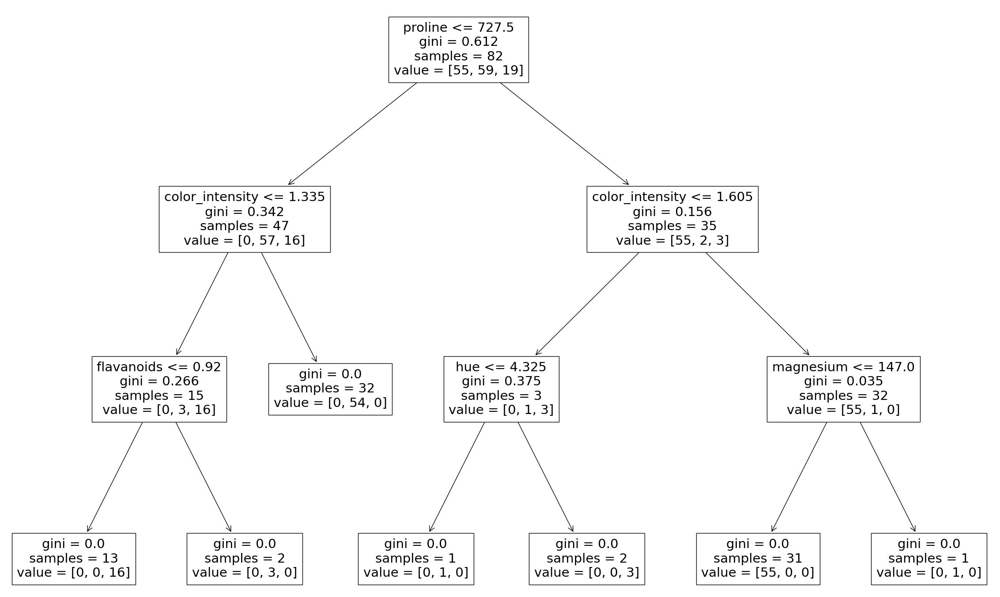

Bootstrap Aggregation (Bagging)
Bagging
Methods such as Decision Trees, can be prone to overfitting on the training set which can lead to wrong predictions on new data.
Bootstrap Aggregation (bagging) is a ensembling method that attempts to resolve overfitting for classification or regression problems. Bagging aims to improve the accuracy and performance of machine learning algorithms. It does this by taking random subsets of an original dataset, with replacement, and fits either a classifier (for classification) or regressor (for regression) to each subset. The predictions for each subset are then aggregated through majority vote for classification or averaging for regression, increasing prediction accuracy.
Evaluating a Base Classifier
To see how bagging can improve model performance, we must start by evaluating how the base classifier performs on the dataset. If you do not know what decision trees are review the lesson on decision trees before moving forward, as bagging is an continuation of the concept.
We will be looking to identify different classes of wines found in Sklearn's wine dataset.
Let's start by importing the necessary modules.
from sklearn import datasets
from sklearn.model_selection import train_test_split
from sklearn.metrics import accuracy_score
from sklearn.tree import DecisionTreeClassifier
Next we need to load in the data and store it into X (input features) and y (target). The parameter as_frame is set equal to True so we do not lose the feature names when loading the data. (sklearn version older than 0.23 must skip the as_frame argument as it is not supported)
data = datasets.load_wine(as_frame = True)
X = data.data
y = data.target
In order to properly evaluate our model on unseen data, we need to split X and y into train and test sets. For information on splitting data, see the Train/Test lesson.
X_train, X_test, y_train, y_test = train_test_split(X, y, test_size = 0.25, random_state = 22)
dtree = DecisionTreeClassifier(random_state = 22)
dtree.fit(X_train,y_train)
DecisionTreeClassifier(random_state=22)
y_pred = dtree.predict(X_test)
print("Train data accuracy:",accuracy_score(y_true = y_train, y_pred = dtree.predict(X_train)))
print("Test data accuracy:",accuracy_score(y_true = y_test, y_pred = y_pred))
Train data accuracy: 1.0 Test data accuracy: 0.8222222222222222
Example: Import the necessary data and evaluate base classifier performance.
from sklearn import datasets
from sklearn.model_selection import train_test_split
from sklearn.metrics import accuracy_score
from sklearn.tree import DecisionTreeClassifier
data = datasets.load_wine(as_frame = True)
X = data.data
y = data.target
X_train, X_test, y_train, y_test = train_test_split(X, y, test_size = 0.25, random_state = 22)
dtree = DecisionTreeClassifier(random_state = 22)
dtree.fit(X_train,y_train)
y_pred = dtree.predict(X_test)
print("Train data accuracy:",accuracy_score(y_true = y_train, y_pred = dtree.predict(X_train)))
print("Test data accuracy:",accuracy_score(y_true = y_test, y_pred = y_pred))
The base classifier performs reasonably well on the dataset achieving 82% accuracy on the test dataset with the current parameters (Different results may occur if you do not have the random_state parameter set).
Now that we have a baseline accuracy for the test dataset, we can see how the Bagging Classifier out performs a single Decision Tree Classifier.
Creating a Bagging Classifier
For bagging we need to set the parameter n_estimators, this is the number of base classifiers that our model is going to aggregate together.
For this sample dataset the number of estimators is relatively low, it is often the case that much larger ranges are explored. Hyperparameter tuning is usually done with a grid search, but for now we will use a select set of values for the number of estimators.
We start by importing the necessary model.
from sklearn.ensemble import BaggingClassifier
estimator_range = [2,4,6,8,10,12,14,16]
Note: The default parameter for the base classifier in BaggingClassifier is the DicisionTreeClassifier therefore we do not need to set it when instantiating the bagging model.
models = []
scores = []
for n_estimators in estimator_range:
# Create bagging classifier
clf = BaggingClassifier(n_estimators = n_estimators, random_state = 22)
# Fit the model
clf.fit(X_train, y_train)
# Append the model and score to their respective list
models.append(clf)
scores.append(accuracy_score(y_true = y_test, y_pred = clf.predict(X_test)))
import matplotlib.pyplot as plt
# Generate the plot of scores against number of estimators
plt.figure(figsize=(9,6))
plt.plot(estimator_range, scores)
# Adjust labels and font (to make visable)
plt.xlabel("n_estimators", fontsize = 18)
plt.ylabel("score", fontsize = 18)
plt.tick_params(labelsize = 16)
# Visualize plot
plt.show()
Example: Import the necessary data and evaluate the BaggingClassifier performance.
import matplotlib.pyplot as plt
from sklearn import datasets
from sklearn.model_selection import train_test_split
from sklearn.metrics import accuracy_score
from sklearn.ensemble import BaggingClassifier
data = datasets.load_wine(as_frame = True)
X = data.data
y = data.target
X_train, X_test, y_train, y_test = train_test_split(X, y, test_size = 0.25, random_state = 22)
estimator_range = [2,4,6,8,10,12,14,16]
models = []
scores = []
for n_estimators in estimator_range:
# Create bagging classifier
clf = BaggingClassifier(n_estimators = n_estimators, random_state = 22)
# Fit the model
clf.fit(X_train, y_train)
# Append the model and score to their respective list
models.append(clf)
scores.append(accuracy_score(y_true = y_test, y_pred = clf.predict(X_test)))
# Generate the plot of scores against number of estimators
plt.figure(figsize=(9,6))
plt.plot(estimator_range, scores)
# Adjust labels and font (to make visable)
plt.xlabel("n_estimators", fontsize = 18)
plt.ylabel("score", fontsize = 18)
plt.tick_params(labelsize = 16)
# Visualize plot
plt.show()
Results Explained
By iterating through different values for the number of estimators we can see an increase in model performance from 82.2% to 95.5%. After 14 estimators the accuracy begins to drop, again if you set a different random_state the values you see will vary. That is why it is best practice to use cross validation to ensure stable results.
In this case, we see a 13.3% increase in accuracy when it comes to identifying the type of the wine.
Another Form of Evaluation
As bootstrapping chooses random subsets of observations to create classifiers, there are observations that are left out in the selection process. These "out-of-bag" observations can then be used to evaluate the model, similarly to that of a test set. Keep in mind, that out-of-bag estimation can overestimate error in binary classification problems and should only be used as a compliment to other metrics.
We saw in the last exercise that 12 estimators yielded the highest accuracy, so we will use that to create our model. This time setting the parameter oob_score to true to evaluate the model with out-of-bag score.
Example: Create a model with out-of-bag metric.
from sklearn import datasets
from sklearn.model_selection import train_test_split
from sklearn.ensemble import BaggingClassifier
data = datasets.load_wine(as_frame = True)
X = data.data
y = data.target
X_train, X_test, y_train, y_test = train_test_split(X, y, test_size = 0.25, random_state = 22)
oob_model = BaggingClassifier(n_estimators = 12, oob_score = True,random_state = 22)
oob_model.fit(X_train, y_train)
print(oob_model.oob_score_)
Since the samples used in OOB and the test set are different, and the dataset is relatively small, there is a difference in the accuracy. It is rare that they would be exactly the same, again OOB should be used quick means for estimating error, but is not the only evaluation metric.
Generating Decision Trees from Bagging Classifier
As was seen in the Decision Tree lesson, it is possible to graph the decision tree the model created. It is also possible to see the individual decision trees that went into the aggregated classifier. This helps us to gain a more intuitive understanding on how the bagging model arrives at its predictions.
Note: This is only functional with smaller datasets, where the trees are relatively shallow and narrow making them easy to visualize.
We will need to import plot_tree function from sklearn.tree. The different trees can be graphed by changing the estimator you wish to visualize.
Example: Generate Decision Trees from Bagging Classifier
from sklearn import datasets
from sklearn.model_selection import train_test_split
from sklearn.ensemble import BaggingClassifier
from sklearn.tree import plot_tree
X = data.data
y = data.target
X_train, X_test, y_train, y_test = train_test_split(X, y, test_size = 0.25, random_state = 22)
clf = BaggingClassifier(n_estimators = 12, oob_score = True,random_state = 22)
clf.fit(X_train, y_train)
plt.figure(figsize=(30, 20))
plot_tree(clf.estimators_[0], feature_names = X.columns)

Here we can see just the first decision tree that was used to vote on the final prediction. Again, by changing the index of the classifier you can see each of the trees that have been aggregated.